Custom data mapping
User-defined XML mapping for export
Certain use cases require you to create custom data mappings. The options may vary, but the process is similar for mapping between different source and target formats. This section provides an example using XML and you can apply the same principals to create custom mappings for other formats.
The following section describes a user-defined data mapping.
XML export
To export an XML file with a data structure that is not compliant with the Default XML type, you can manually configure a user-defined data mapping.
To facilitate the configuration, the add-on can automatically analyze your XML file to generate the XML configuration as illustrated below. In most cases the XML file you want to get already exists, and you can reuse it as a template to automatically feed the configuration.
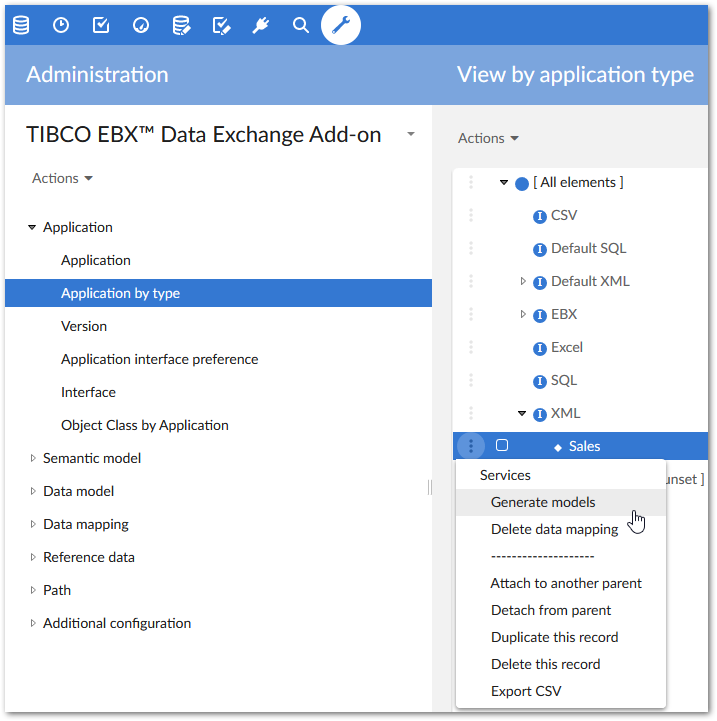
First, a new XML type application has been created manually. In the following image, this is the Sales application. Since the type is XML (not Default XML), the add-on's Generate models service is available and allows you to get the XML configuration automatically.
The add-on allows you to enter the XML file that will be used to create the XML configuration.
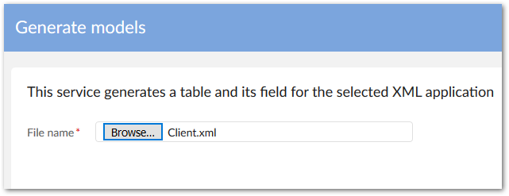
Then you select a node path in the XML file from which the XML configuration must be applied.
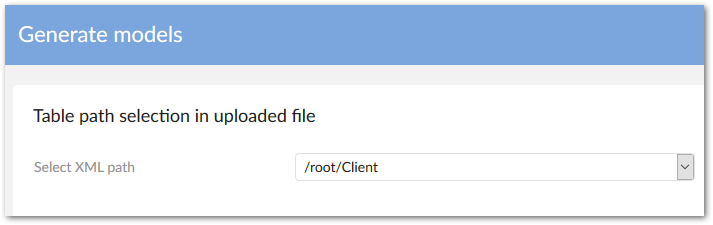
The result of the configuration is displayed below. The Sales XML type application is now declared with the fields corresponding to the XML tags existing in the file.
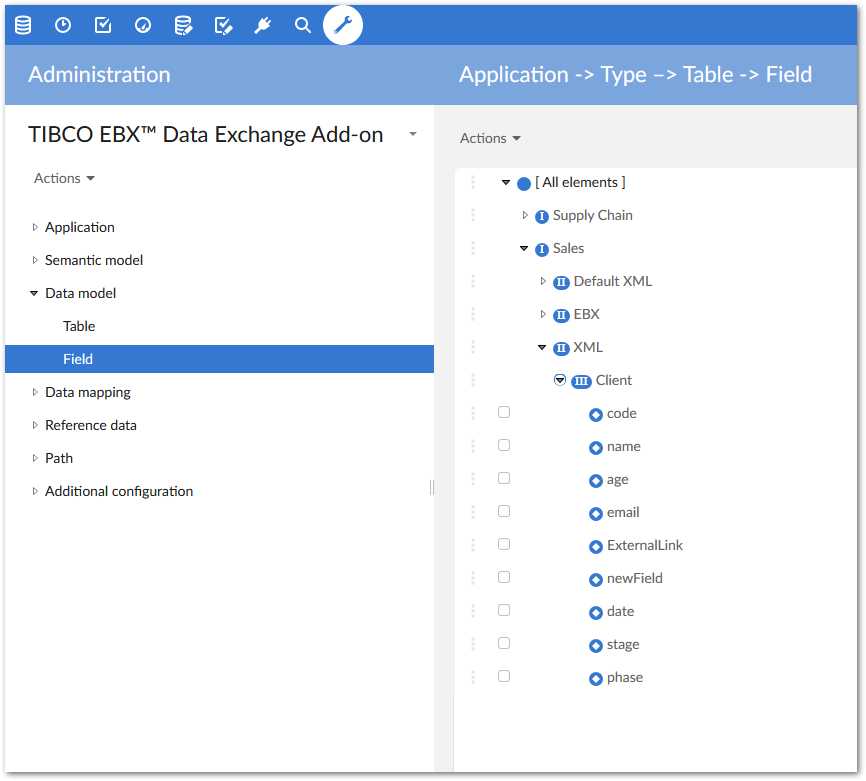
The configuration of a field with its XML path can be adapted manually as illustrated below. You can change the name, the path, etc. Conversely, in the case of a configuration based on the Default XML, the names and paths cannot be modified and are under add-on control.
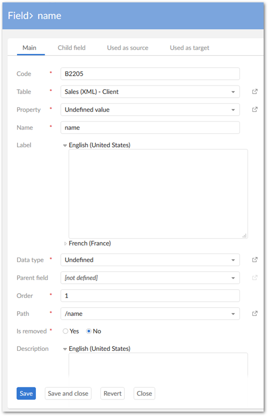
To make the export process available from the EBX type application (Sales dataspace) to the Sales application, the Interface between both must be declared as follows:
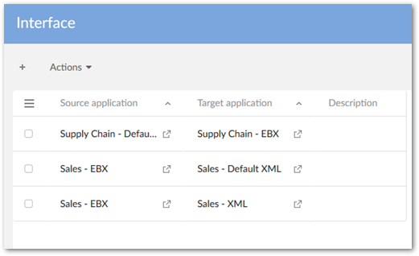
Now, the export UI displays the Sales target application as an option:
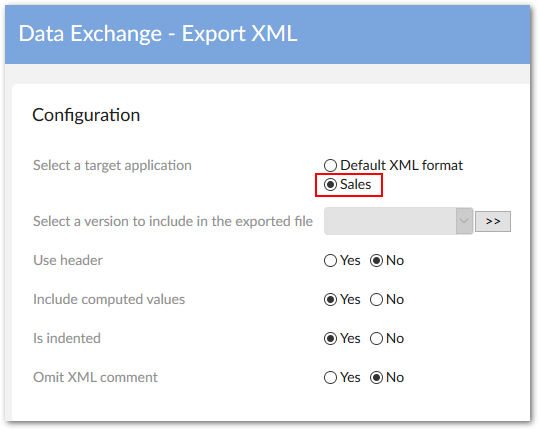
The options are already described in the previous section. However, when executing the export process based on the above configuration an error is raised.
Indeed, even though the XML field configuration is done, the Table mapping and Field mapping are not yet configured. The table mapping is declared as follows by creating a new record in the Table mapping table:
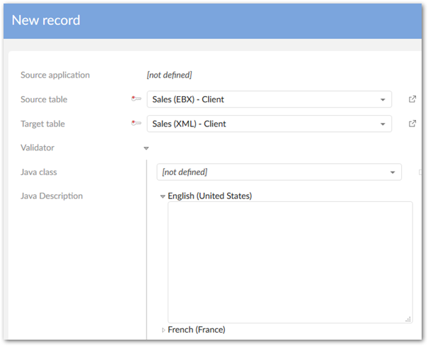
A new execution of the export process entails a useless result because the fields are not exported until the Field mapping is configured:
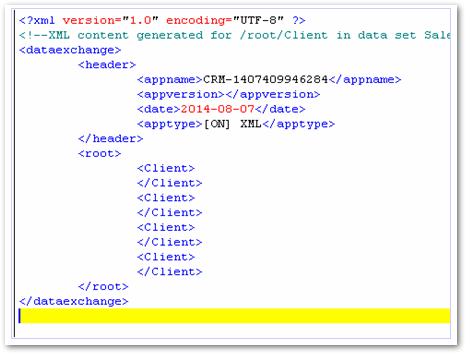
For every field, the mapping from the source to the target is declared as follows:
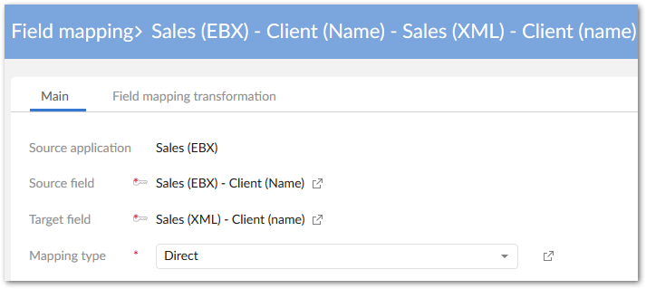
Now, the export process integrates the fields that have been configured (in this example only the name is declared in the Field mapping table).
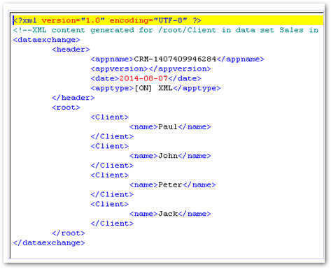
To change the path of a field, a direct modification in the path configuration can be done as illustrated below. The initial path /Client has been changed into /clientName.
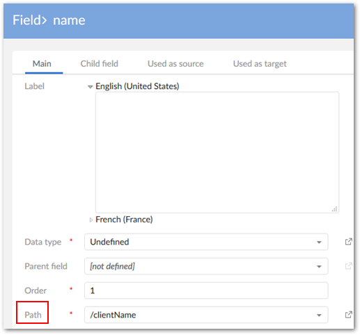
Now, an export process execution generates the following result (new path clientName):
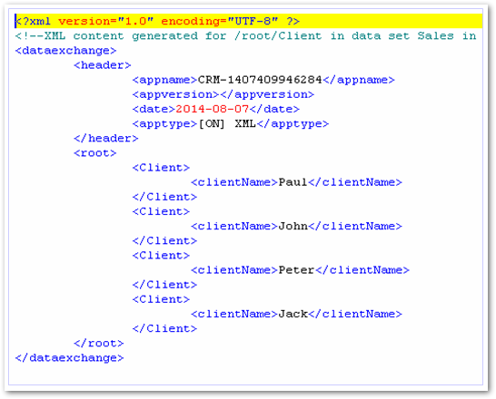
High-level overview of XML import with custom mapping
To import an XML file with a data structure that is not compliant with the Default XML configuration, you can manually configure a user-defined data mapping using the same process described in the previous XML export section. You can use the XML import file as a template to automatically generate the XML configuration.
Then you create an Interface from the source XML type application to the target EBX type application Sales.
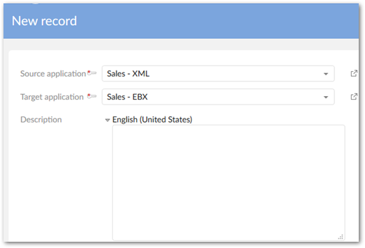
The Table mapping and Field mapping must also be configured:
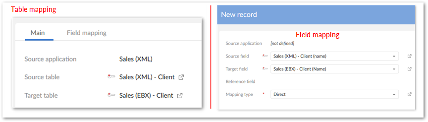
Special notation: | |
|---|---|
| The under-terminal node is child of complex and multiple occurrences node. It will be ONLY imported/ exported if mapping of its parent node is declared in the configuration |